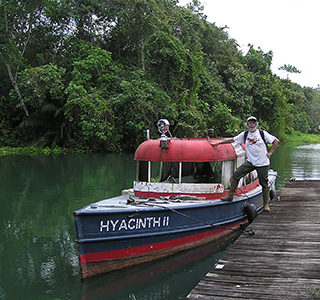

Department of Ecology & Evolutionary Biology
University of Toronto

General research areas
- Evolutionary transitions in plant reproductive systems
- Ecology and evolution of plant mating
- Function and adaptive significance of floral variation
- Gender strategies and sex ratio evolution
- Evolution and genetics of invasive species
Barrett’s Lab Research
The research in my laboratory focuses on understanding the mechanisms responsible for the evolution of plant mating strategies and their genetic and evolutionary consequences. We also work on the genetics of invasive species, the role of local adaptation in colonization, and plant barcoding and its applications. Our studies involve diverse groups, with a major focus on Eichhornia, Lythrum, Rumex and Sagittaria.
Our work integrates different approaches including theory, comparative biology, field experiments, genomics, and quantitative, ecological and evolutionary genetics. Research projects are currently being conducted in Argentina, Chile, China, New Zealand, South Africa and North America.